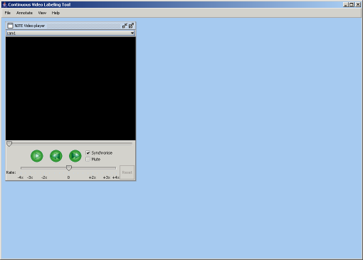

The Continuous Video Labeling Tool is started from the main program of the NITE XML Toolkit. After selecting Continuous Video Labeling from the program list, you select an observation i.e. a meeting from the observation list. After the observation is selected, the tool is started and you will see the startup screen (Figure 1).

Figure 1: Main Window